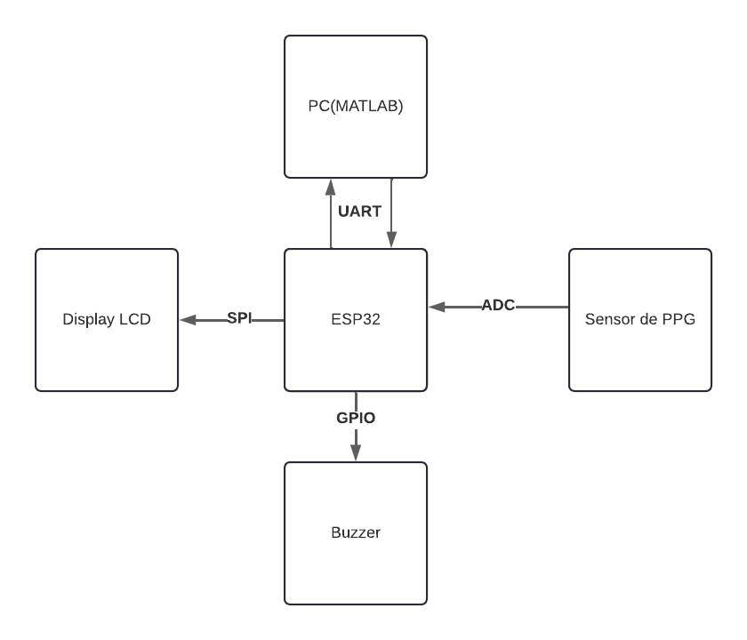
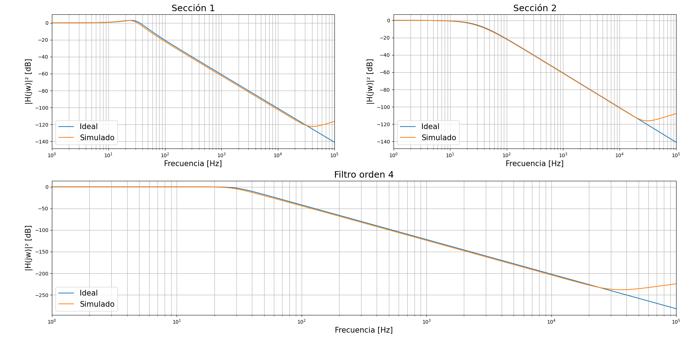
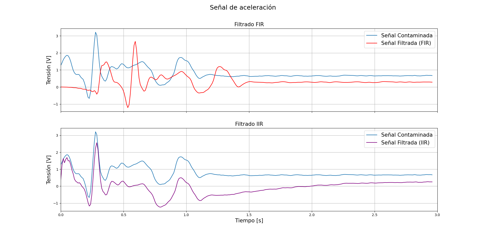
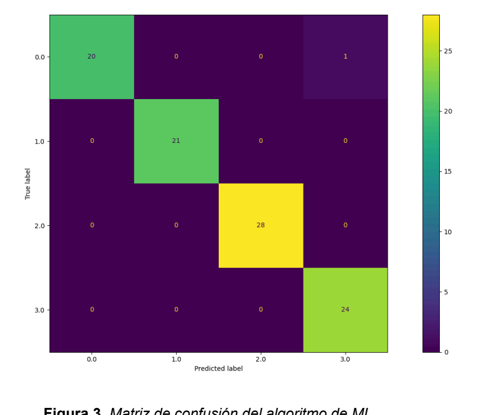
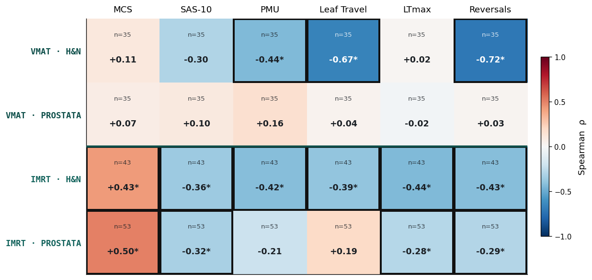
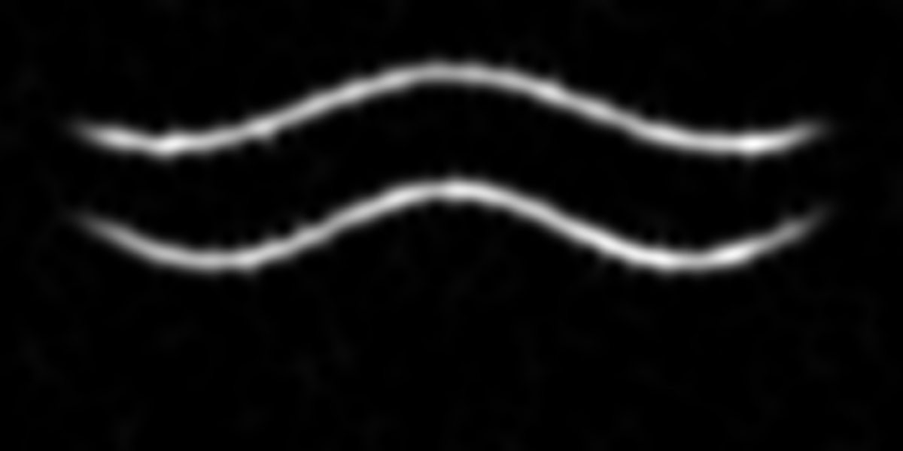
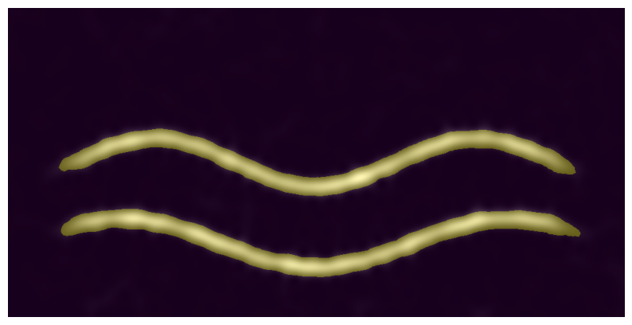
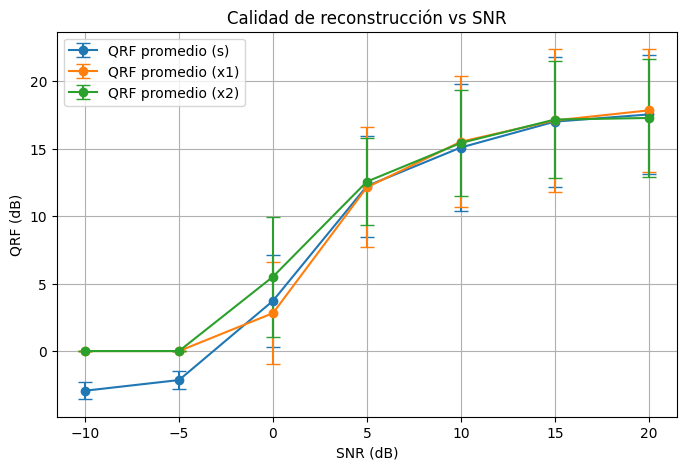

Trabajo en el tramo entre una señal cruda —PPG, EMG, acelerometría— y una decisión automática confiable: adquisición, filtrado analógico/digital, detección de eventos y modelos de ML corriendo en hardware embebido. Acá abajo están los proyectos donde apliqué ese pipeline.
Sistema embebido que lee un sensor de pulso por fotopletismografía (PPG), calcula frecuencia cardíaca (BPM) e intervalo entre latidos (IBI) en tiempo real sobre un ESP32, y muestra la señal y las métricas en un display SPI. Cada latido detectado se envía por UART a MATLAB, que acumula un minuto de intervalos, arma el tacograma y estima la relación de bandas LF/HF —el mismo marcador que se usa para variabilidad de frecuencia cardíaca (HRV)— para decidir si hay somnolencia y disparar una alarma sonora.
Motivado por la relación entre somnolencia y accidentes de tránsito. Incluye detección de latidos con período refractario para evitar falsos positivos, filtro IIR sobre la señal cruda, y una carcasa impresa en 3D para el sensor.

Pipeline completo de señal a clasificador embebido, en equipo: acelerómetro ADXL345 sobre un guante de boxeo, muestreado a 90 Hz según el contenido frecuencial real del gesto (<30 Hz), con ventanas de 2 s. Se identificó y filtró ruido de línea a 50/100 Hz, se diseñaron y compararon filtros FIR e IIR sobre la señal de aceleración, y en paralelo se dimensionaron filtros analógicos activos (Sallen-Key, MFB) validando su respuesta simulada contra la ideal.
Con la señal ya filtrada se extrajeron features y se entrenó un clasificador (árbol de decisión / Random Forest) para distinguir cuatro movimientos —cross, hook, uppercut, guardia— y se exportó directamente a C para correr en inferencia sobre la EDU-CIAA. Documentamos no solo el desempeño en test sino también la caída de precisión al pasar a hardware real, algo que me parece más honesto (y más útil) que reportar solo el número de entrenamiento. (código del proyecto en repo privado — disponible a pedido)



Trabajo actual en el Centro de Medicina Nuclear y Radioterapia de Entre Ríos (CEMENER): analizar si la complejidad de un plan de radioterapia (IMRT/VMAT) predice el resultado de su control de calidad específico de paciente (PSQA), para poder asignar el método de verificación según qué tan exigente es cada plan en vez de aplicar siempre el mismo criterio. Sobre 274 planes tratados, extraje seis métricas de complejidad del colimador multiláminas (MCS, SAS-10, PMU, recorrido de hojas, recorrido máximo y reversiones de dirección) para 164 planes de próstata y cabeza y cuello, y las correlacioné (Spearman, tras verificar no-normalidad con Shapiro-Wilk) contra la tasa de aprobación gamma de dosimetría portal, estratificando por zona anatómica y técnica.
Los patrones resultaron claramente distintos entre subgrupos: el MCS predice bien en IMRT (ρ hasta +0.50) pero no en VMAT, donde en cambio el recorrido de hojas y las reversiones correlacionan fuerte (ρ hasta -0.72). La línea que sigue es entrenar un modelo que clasifique planes por nivel de complejidad para asignar mejor los recursos de control de calidad.

Trabajo en equipo enfocado exclusivamente en la etapa que casi nadie con perfil de software toca: adquirir la señal de ECG de forma segura y sin degradarla. Análisis del escenario de medición completo —amplitud de ±2 mV, ancho espectral 0.05–150 Hz, impedancia piel-electrodo, potencial de media celda (<300 mV), ruido de línea y movimiento— y diseño del sistema para cumplir IEC 60601-1: corriente de fuga <10 µA y aislamiento del paciente frente a macro/microchoque.
Es la contraparte de bioinstrumentación de los proyectos de software: entender por qué la señal llega como llega antes de decidir cómo procesarla.
Estudio experimental sobre electromiografía de superficie: se registró la señal EMG del pectoral mayor durante press de banco en tres grupos con distinto nivel de entrada en calor (sin calentamiento / adecuado / excesivo), normalizando la carga de trabajo a partir del 1RM estimado (ecuación de Epley). Se calculó la energía de la señal EMG como indicador de activación muscular total y se compararon los grupos estadísticamente.
Un ejercicio completo de método científico aplicado a señales biomédicas: diseño experimental, procesamiento de señal y comunicación de resultados con rigor.
Implementación desde cero de las herramientas de DSP avanzado que suelen usarse para señales biomédicas no estacionarias: STFT, transformada wavelet continua (Morlet, bump, mexican hat), detección y reconstrucción de crestas, synchrosqueezing y descomposición modal empírica (EMD). Es la caja de herramientas a la que recurro cuando un filtro clásico no alcanza para caracterizar una señal.
Tratar la separación de una señal multicomponente como un problema de visión por computadora en vez de uno clásico de tracking de crestas: cada componente (chirp) de la señal deja una cresta bien definida en su espectrograma, así que probé usar SAM / SAM2 (Segment Anything) para segmentar cada cresta como si fuera un objeto en una imagen, agrupé los puntos de cada máscara con DBSCAN y reconstruí la señal temporal de cada componente a partir de su segmento.
Lo validé de forma cuantitativa y no solo visual: barrido de SNR de -10 a 20 dB con 50 repeticiones por punto, midiendo QRF (quality reconstruction factor) y correlación de Pearson contra la señal original de cada componente.



Fuera de los trabajos formales de la carrera, vengo estudiando por mi cuenta hacia dónde se mueve el procesamiento de señales cuando se combina con deep learning. Sin repos propios todavía para mostrar acá, pero es la dirección en la que quiero seguir creciendo:
Estudiante avanzado de Bioingeniería en la Facultad de Ingeniería de la UNER. Me interesa particularmente el tramo entre la señal fisiológica cruda y la decisión automática que se toma a partir de ella: el filtro correcto, el detector de eventos que no se rompe con artefactos, y el clasificador que sigue funcionando cuando sale del notebook y corre en hardware real.